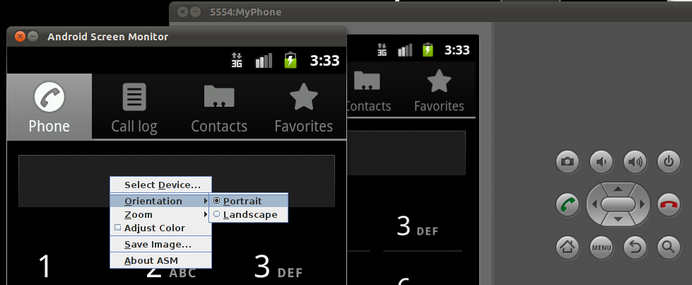

Android Screen Monitor (ASM) 可以動態將 emulator/device 的畫面投射到桌面。

支援：
-
截圖另存成 PNG 檔。
-
縱向或橫向顯示（但要搭配手動調整 emulator/device 的顯示方向）。
-
調整顯示比例，適用 emulator/device 的解析度高過桌面時。
開發還算活躍，2013-06-02 才釋出 2.50 版。
安裝
-
ASM 做為一個 ADB client，因此要先確認已安裝 JDK 跟 Android SDK。
-
到官網http://code.google.com/p/android-screen-monitor/downloads/list[下載]
ASM_<version>.zip。 -
解壓縮後就會得到
asm.jar，直接執行即可。$ java -jar asm.jar